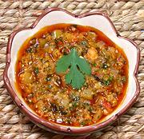

|
Sofrito - (Formal)Puerto Rico - Sofrito | ||||
| Makes: Effort: Sched: DoAhead: |
2-1/4 cups ** 1-1/8 hour Yes |
Sofrito is an indispensable flavor base for Puerto Rican cuisine. It is made in batches as a kitchen staple. If you need something quicker, see Sofrito - Informal. | |||
|
|
7 10 10 2-1/2 3-1/2 2 3 4 1/2 1 ------- 1 3 2 1 1 ------- |
oz oz cl oz oz oz T c T --- T T T T --- |
Tomato Onion Garlic Smoked Ham Cubanelle Chili (1) Aji Dulce (2) Cilantro (3) Culantro Leaf (4) Olive Oil Tomato Paste -- Seasonings Annatto Oil (5) Alcaparrado (6) Bay Leaves Oregano, dried Salt ------------- |
Make as much as you think you will need in a reasonable time, and freeze what you don't need within a few days. For Vegetarian, just leave out the Ham. Do Ahead
|